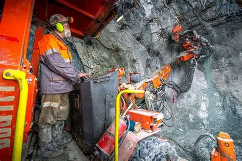
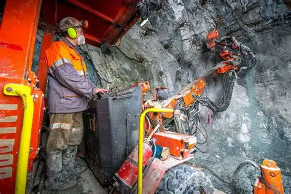

Scientific Report & Mapping Services
English
We prepare comprehensive scientific reports and detailed maps based on geological data. These include hydro geological assessments, mineral resource evaluations, and environmental mappings.
- Hydro geological reports
- Mineral resource mapping
- Environmental impact maps
- Data visualization
हिंदी
हम भूविज्ञानी डेटा के आधार पर व्यापक वैज्ञानिक रिपोर्ट और विस्तृत मानचित्र तैयार करते हैं। इनमें हाइड्रो भूविज्ञानी मूल्यांकन, खनिज संसाधन मूल्यांकन और पर्यावरणीय मैपिंग शामिल हैं।
- हाइड्रो भूविज्ञानी रिपोर्ट
- खनिज संसाधन मैपिंग
- पर्यावरणीय प्रभाव मानचित्र
- डेटा विज़ुअलाइज़ेशन
Our Work
 
